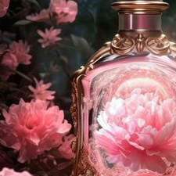
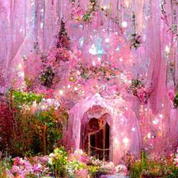

This form is used for multiple many things that include user feedback, issues with items, refunds, change of product style, and ideas for our future products. There is a message option to where you can insert any needed materials or text that is relevant to your request. You can upload as much as possible so we can get a clear understanding of what can help you with. If able, please submit suggestions for improvement with our puchasing process. We would love to hear from you!